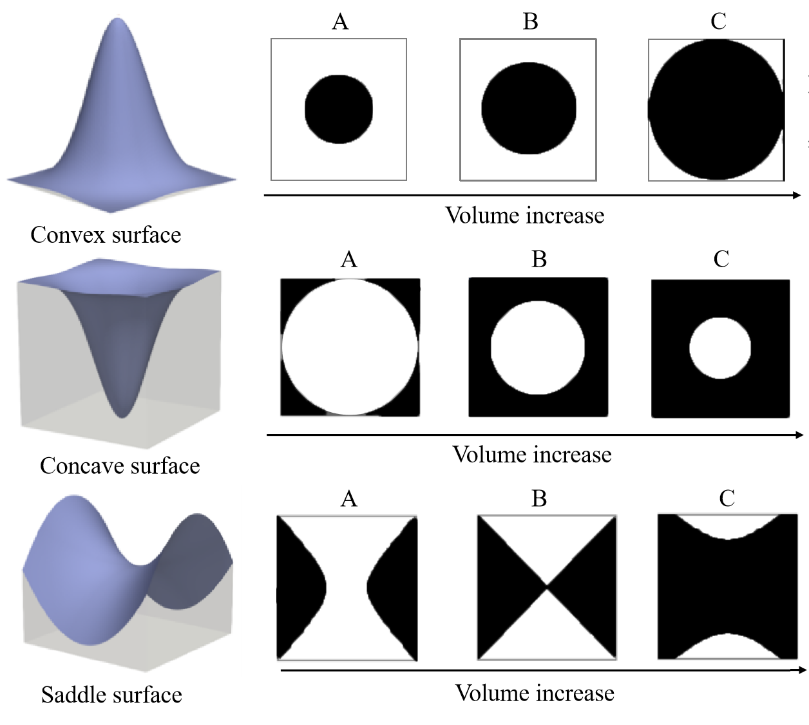
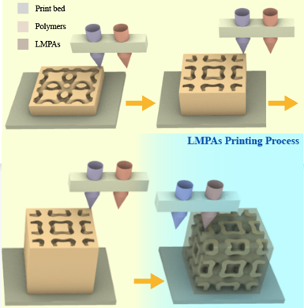

Research Highlights

|
An Optimized, Easy-to-use, Open-source GPU Solver for Large-scale Inverse Homogenization Problems.A reviewer comment "I believe that this manuscript will ultimately be of great value to the readers of SAMO, and the broader topology optimization community!" Abstract: we propose a high-performance GPU solver for inverse homogenization problems to design high-resolution 3D microstructures. Central to our solver is a favorable combination of data structures and algorithms, making full use of the parallel computation power of today’s GPUs through a software-level design space exploration. This solver is demonstrated to optimize homogenized stiffness tensors, such as bulk modulus, shear modulus, and Poisson’s ratio, under the constraint of bounded material volume. Practical high-resolution examples with 512^3 ≈ 134.2 million finite elements run in less than 40 seconds per iteration with a peak GPU memory of 9 GB on an NVIDIA GeForce GTX 1080Ti GPU. Besides, our GPU implementation is equipped with an easy-to-use framework with less than 20 lines of code to support various objective functions defined by the homogenized stiffness tensors. Di Zhang, Xiaoya Zhai*, Ligang Liu, Xiao-Ming Fu. SMO, 2023. [Project Page]
|
Topology Optimization of Differentiable Microstructures.
Contribution: several 2D/3D differentiable microstructures with close to the upper limit of the theoretical properties are proposed for the first time! Abstract: designing periodic microstructures is a fundamental topic in topology optimization. In general, most researches focus on functional and connectable design and creating a series of microstructures with discrete and predefined volume. However, microstructures with continuous volume are expected in many practical cases. To achieve highly functional and connectable microstructures with continuous densities, discontinuity of bulk modulus can be characterized by local maxima and saddle points of this 3D parameterized surface, which are effectively avoided by a novel regularization using a heat equation. Differentiable microstructures are inversely designed by our method. The bulk modulus of each microstructure generated with prescribed volume fraction is very close to the Hashin-Shtrikman upper bound.
[Project Page] |
 |
|  | Low-melting-point Alloys Integrated Extrusion Additive Manufacturing.A reviewer comment "This work proposes an innovative method to directly fabricate 3D printed very complex structures using LMPAs. It could potentially bring several advantages in many fields!" Abstract: in contrast to established fabricated materials, low-melting-point alloys (LMPAs) are increasingly attractive because they have favorable electrical/thermal conductivities and mechanical strengths. However, LMPA additive manufacturing is still in its infancy. We report a novel strategy for fabricating the complex and/or multifunctional components of LMPAs by extrusion additive manufacturing with two nozzles (for extruding the polymer and for extruding the LMPA). The proposed strategy was used to successfully fabricate complex LMPA components for the first time. We fabricated LMPA/polymer composite parts with improved mechanical properties, and implemented the integrated manufacturing of circuits and 3D products. The strategy will enable using LMPAs in applications such as smart structures, electromagnetic shielding, biomedicine, thermal management, energy harvesting, and advanced electronics. Jingchao Jiang+, Xiaoya Zhai+, Kang Zhang+, Liuchao Jin, Qitao Lu, Zhichao Shen, Wei-Hsin Liao*. Additive manufacturing, 2023. + These authors contributed equally to this work. [Project Page] |